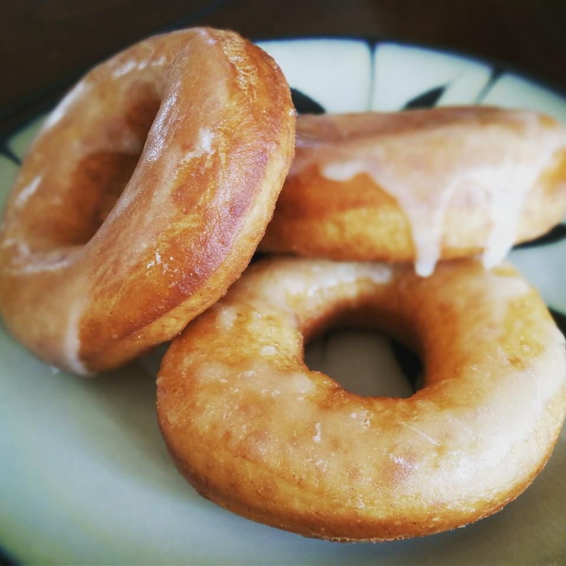

Doughnuts

Description
A doughnut or donut is a type of food made from leavened fried dough. It is popular in many countries and is prepared in various forms as a sweet snack
that can be homemade or purchased in bakeries, supermarkets, food stalls, and franchised specialty vendors. Doughnut is the traditional spelling, while donut
is the simplified version; the terms are often used interchangeably.
Doughnuts are usually deep fried from a flour dough, but other types of batters can also be used. Various toppings and flavorings are used for different types,
such as sugar, chocolate or maple glazing. Doughnuts may also include water, leavening, eggs, milk, sugar, oil, shortening, and natural or artificial flavors.
The two most common types are the ring doughnut and the filled doughnut, which is injected with fruit preserves (the jelly doughnut), cream, custard,
or other sweet fillings. Small pieces of dough are sometimes cooked as doughnut holes. Once fried, doughnuts may be glazed with a sugar icing, spread
with icing or chocolate, or topped with powdered sugar, cinnamon, sprinkles or fruit. Other shapes include balls, flattened spheres, twists, and other forms.
Doughnut varieties are also divided into cake (including the old-fashioned) and yeast-risen type doughnuts. Doughnuts are often accompanied by coffee or milk.
They are sold at doughnut shops, convenience stores, petrol/gas stations, cafes or fast food restaurants.
Ingredients
- 2 (.25 ounce) envelopes active dry yeast
- ¼ cup warm water (105 to 115 degrees)
- 1 ½ cups lukewarm milk
- ½ cup white sugar
- 1 teaspoon salt
- 2 eggs
- ⅓ cup shortening
- 5 cups all-purpose flour
- 1 quart vegetable oil for frying
- ⅓ cup butter
- 2 cups confectioners' sugar
- 1 ½ teaspoons vanilla
- 4 tablespoons hot water or as needed
Steps
- Sprinkle the yeast over the warm water, and let stand for 5 minutes, or until foamy.
- In a large bowl, mix together the yeast mixture, milk, sugar, salt, eggs, shortening, and 2 cups of the flour. Mix for a few minutes at low speed,
or stirring with a wooden spoon. Beat in remaining flour 1/2 cup at a time, until the dough no longer sticks to the bowl. Knead for about 5 minutes,
or until smooth and elastic. Place the dough into a greased bowl, and cover. Set in a warm place to rise until double. Dough is ready if you touch it,
and the indention remains.
- Turn the dough out onto a floured surface, and gently roll out to 1/2 inch thickness. Cut with a floured doughnut cutter.
Let doughnuts sit out to rise again until double. Cover loosely with a cloth.
- Melt butter in a saucepan over medium heat. Stir in confectioners' sugar and vanilla until smooth. Remove from heat,
and stir in hot water one tablespoon at a time until the icing is somewhat thin, but not watery. Set aside.
- Heat oil in a deep-fryer or large heavy skillet to 350 degrees F (175 degrees C). Slide doughnuts into the hot oil using a wide spatula.
Turn doughnuts over as they rise to the surface. Fry doughnuts on each side until golden brown. Remove from hot oil, to drain on a wire rack.
Dip doughnuts into the glaze while still hot, and set onto wire racks to drain off excess. Keep a cookie sheet or tray under racks for easier clean up.